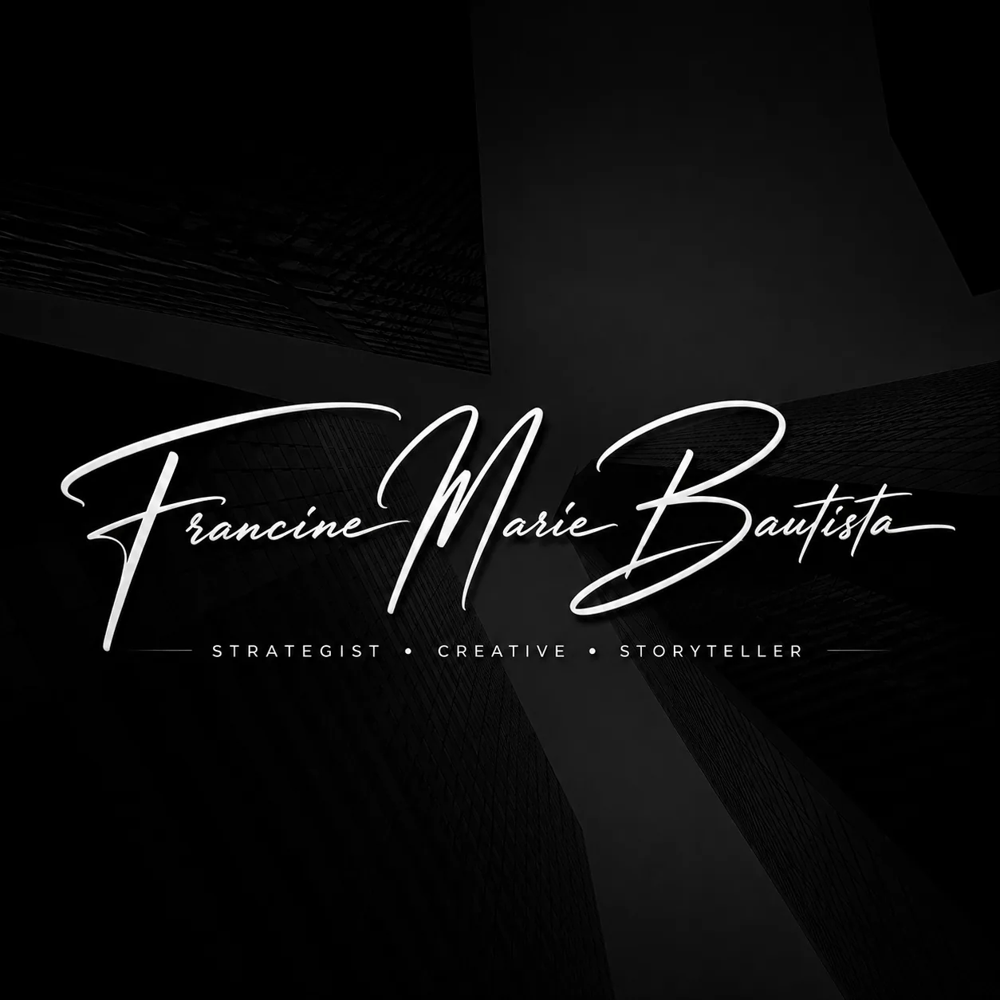
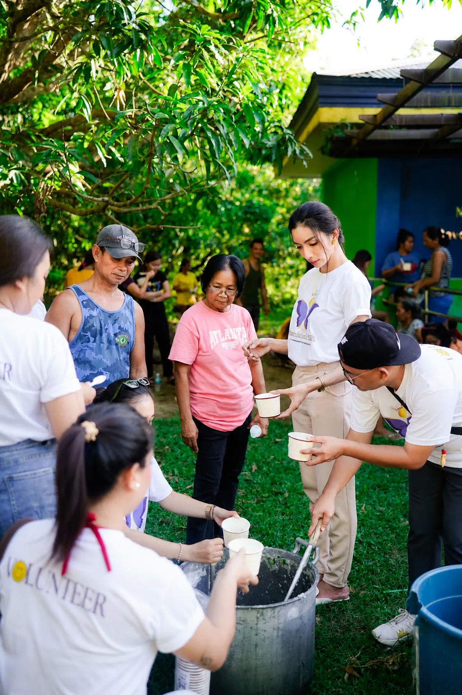
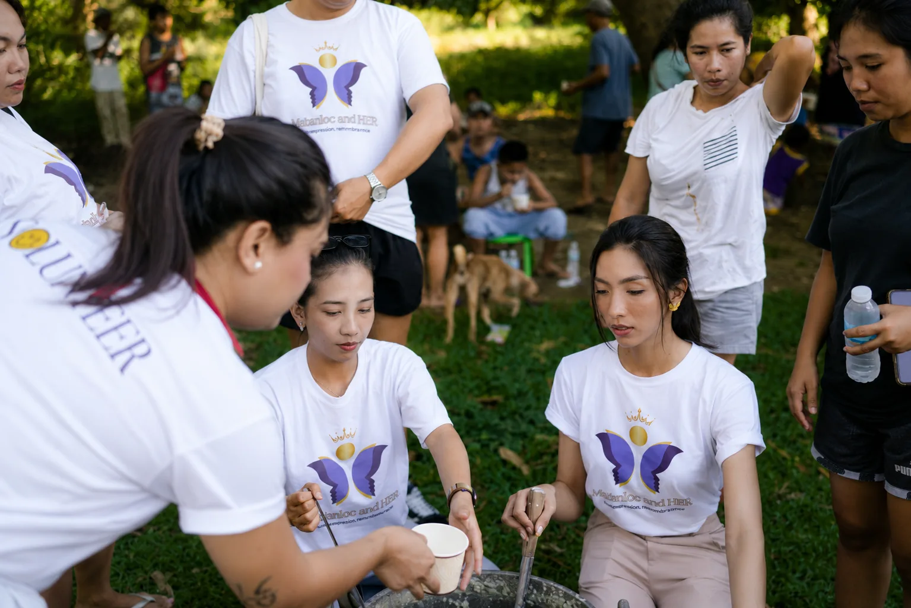
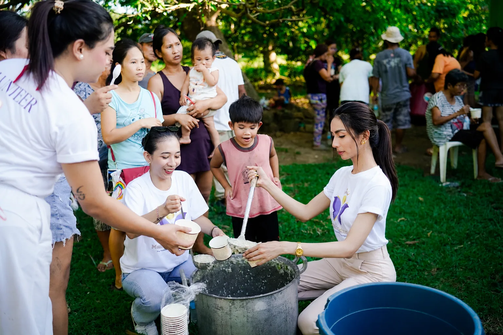

Jobs & Career
Opportunity browsing with the source named, a private career profile, resume tooling, saved roles, and an application path that hands the user back to the official employer instead of pretending to be one.

This portfolio includes an optional audio experience.
Sound only begins after you choose. You can change it at any time.
Masinloc, Zambales · Philippines
Strategist · Creative Director · Storyteller
I build the strategy, the story and the thing itself — brand, communication, culture and product, treated as one problem instead of four.
Most work fails long before the design stage. It fails when nobody decided who it was for, what it had to change, or what it refused to pretend to be.
So I start with the argument. Positioning, audience, voice, evidence, and the boundaries a project should never cross. Only then does it become something you can look at.
I have worked as a creative director, a brand and PR strategist, an educator, a researcher and a builder. The range is not a résumé decoration. It is what lets me carry an idea from a sentence to a system without handing it to four different people who each lose a little of it.
Tourism taught me how a place presents itself to the world. History taught me to ask whether the presentation is true. I have never stopped using both.
People, destinations, hospitality, events, culture — and the way a place is packaged for an outsider.
University of the Philippines Baguio. Research method, source comparison, and the discipline of separating what is documented from what is merely repeated.
Teaching forced me to explain complicated things plainly, and to read a room while doing it.
Training adults with very different levels of confidence taught me pacing, patience, and how to tell when instructions are not landing.
Strategy is easy to defend in a room. It is harder to defend standing in front of the people it is supposed to help. Service is how I check whether what I believe about communication survives contact with real life.



“How can what I know become useful to someone other than me?”
That question decides most of what I take on.
Hosting, speaking, facilitating, teaching. I am comfortable holding a room, and I know what it costs to hold one badly.
The useful part is that I do not stop at delivery. I can write the argument, direct the visual, brief the team, structure the information, and still keep track of how the whole thing is landing with the people watching it.
An independent community platform for a town of 56,579 people. Conceived, designed, written and built by one person.
Masinloc Connect began with a local idea: nobody should have to leave the identity of their hometown behind in order to reach opportunity, information, livelihood or the wider world. It is deliberately not a government portal and says so on its own front page.
Opportunity browsing with the source named, a private career profile, resume tooling, saved roles, and an application path that hands the user back to the official employer instead of pretending to be one.
Local food, services, accommodation, shops and makers made discoverable in one place, with merchant and ordering tools as the next layer.
A searchable dictionary with visible review status and provenance, so the language becomes usable rather than ceremonial.
Businesses, professionals, stories and historical material submitted for review before publication — never published automatically.
The part I am most proud of is the least visible: every historical claim carries its certainty on its face.
A hometown archive should be brave enough to say “we do not know yet.”
Select any image to open it full screen. Read the full case study (PDF)
Not as a boast — as a description of range. On Masinloc Connect these were not delegated. They were personally held, at the same time, on the same project.
What that buys a client is fewer handoffs. The strategy does not get diluted on its way to the design, and the design does not quietly contradict the strategy.
07
A platform that helps one town is not a finished idea. It is a working answer to a question I keep asking: how do you make something useful enough that it outlasts the person who made it?
Brand and positioning. Communications and public information. Editorial and creative direction. Research and verification. Cultural and community work. Whole systems, or the one part that is stuck.
Start a conversationMasinloc, Zambales · Philippines